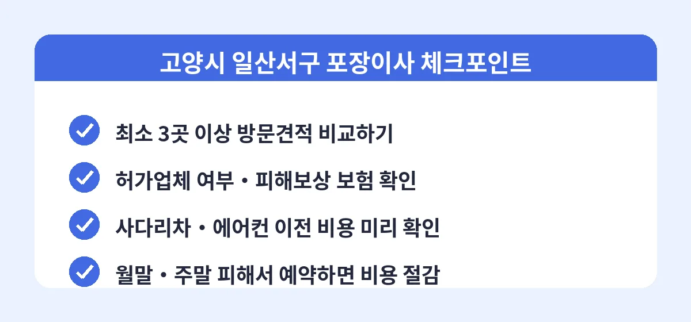

고양시 일산서구는 주엽동, 일산동, 탄현동, 덕이동까지 아파트 단지와 빌라, 오피스텔이 고르게 섞여 있는 지역입니다. 킨텍스 주변 신축 단지로의 입주 수요와 기존 단지 간 이동 수요가 함께 있어 이삿짐센터 선택지가 많은 편인데, 오히려 선택지가 많다 보니 어디에 맡겨야 할지 고민하는 분들이 많습니다. 업체 이름만 보고 고르기보다는, 견적을 받는 과정 자체를 제대로 밟는 것이 좋은 업체를 만나는 지름길입니다.

첫째, 이사 예정일과 출발지·도착지 주소, 평수와 짐 양을 정리합니다. 에어컨 이전, 사다리차 필요 여부 같은 조건도 함께 메모해 두면 견적이 훨씬 정확해집니다. 둘째, 비교견적 서비스에 신청서를 한 번만 작성하면 일산서구에서 활동하는 여러 업체가 견적을 보내옵니다. 셋째, 받은 견적 중 가격과 구성이 괜찮은 2~3곳을 골라 방문견적을 요청합니다. 마지막으로 방문견적 금액과 계약 조건을 비교해 최종 업체를 결정하면 됩니다.
일산서구 포장이사는 원룸·투룸 기준 40만~65만 원, 24평형 아파트 85만~125만 원, 30평형 이상 120만~170만 원 정도가 일반적입니다. 손 없는 날과 월말·주말은 요금이 올라가므로, 날짜에 여유가 있다면 평일 이사로 잡는 것이 비용을 아끼는 방법입니다. 견적은 이사 2~3주 전에 미리 받아두는 것을 추천합니다.
Q. 비교견적 신청하면 전화가 너무 많이 오지 않나요?
신청서에 연락 가능 시간대를 적어두면 대부분 그 시간에 맞춰 연락이 옵니다. 문자나 앱으로 견적을 먼저 받아본 뒤 마음에 드는 업체와만 통화하는 방식으로 진행하면 부담이 훨씬 적습니다.
Q. 빌라나 오피스텔 이사도 포장이사가 가능한가요?
가능합니다. 다만 엘리베이터가 없는 빌라는 계단 작업 비용이, 좁은 골목은 소형 차량 추가 비용이 붙을 수 있으니 건물 조건을 견적 신청 때 정확히 알려주는 것이 중요합니다.
Q. 에어컨 이전 설치는 이삿짐센터가 해주나요?
업체에 따라 자체 기사 또는 제휴 기사가 함께 진행합니다. 탈착과 설치 비용은 보통 15만~25만 원 선이며, 배관 연장이 필요하면 추가 요금이 발생하므로 견적 때 미리 확인하세요.